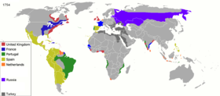

Cotton
Parts of India, China, Central America, South America and the Middle-East have a long history of hand manufacturing cotton textiles, which became a major industry sometime after 1000 AD. In tropical and subtropical regions where it was grown, most was grown by small farmers alongside their food crops and was spun and woven in households, largely for domestic consumption. In the 15th century China began to require households to pay part of their taxes in cotton cloth. By the 17th century almost all Chinese wore cotton clothing. Almost everywhere cotton cloth could be used as a medium of exchange. In India a significant amount of cotton textiles were manufactured for distant markets, often produced by professional weavers. Some merchants also owned small weaving workshops. India produced a variety of cotton cloth, some of exceptionally fine quality.[35] Cotton was a difficult raw material for Europe to obtain before it was grown on colonial plantations in the Americas.[35] The early Spanish explorers found Native Americans growing unknown species of excellent quality cotton: sea island cotton (Gossypium barbadense) and upland green seeded cotton Gossypium hirsutum. Sea island cotton grew in tropical areas and on barrier islands of Georgia and South Carolina, but did poorly inland. Sea island cotton began being exported from Barbados in the 1650s. Upland green seeded cotton grew well on inland areas of the southern U.S., but was not economical because of the difficulty of removing seed, a problem solved by the cotton gin.[22]:157 A strain of cotton seed brought from Mexico to Natchez, Mississippi in 1806 became the parent genetic material for over 90% of world cotton production today; it produced bolls that were three to four times faster to pick.[35]